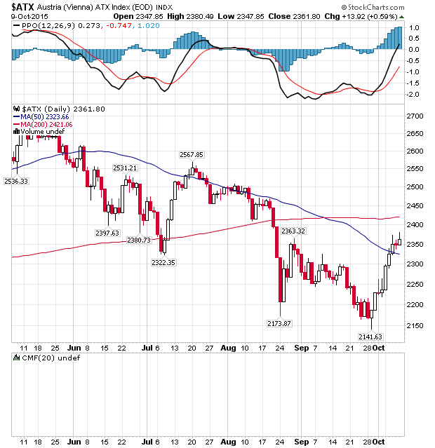

Get into Trading with B.R.A.I.N.

There are tons of software on the market that generate their own knowledge and learn from experience. Others only rely on the same knowledge or the same algorithm without drawing conclusions. Both are methods that are used in numerous ways in many different applications, like the calculation of securities prices, to name one example.
But what if more of these technologies are combined? What if Machine Learning and existing algorithms are combined and achieve better results?
These are some of the questions that our team wants to answer as part of the B.R.A.I.N. project. We want to explore the advantages of the connection of Artificial Intelligence (including evolutionary algorithms and neural networks) with existing technical indicators. This will be tested on the basis of forecasts of financial markets and compared with other software for this usage.